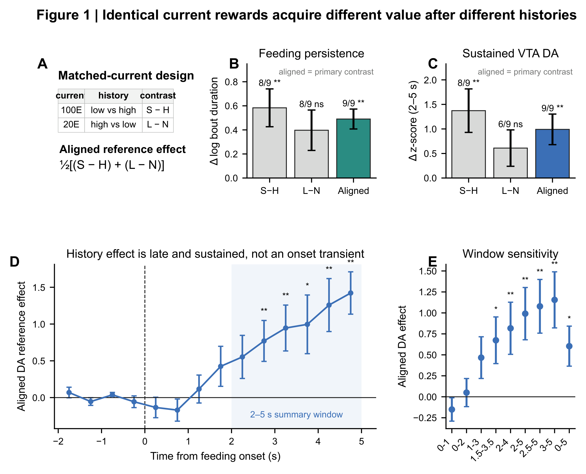
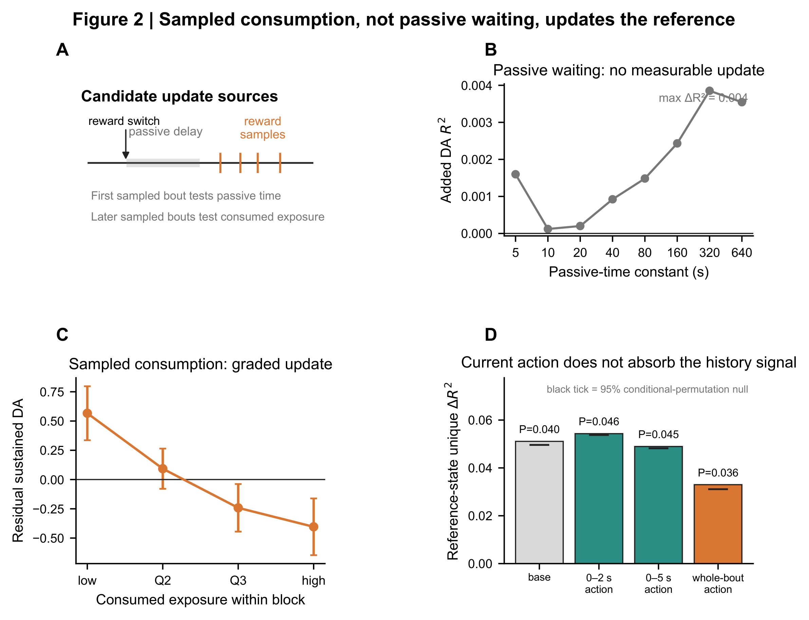
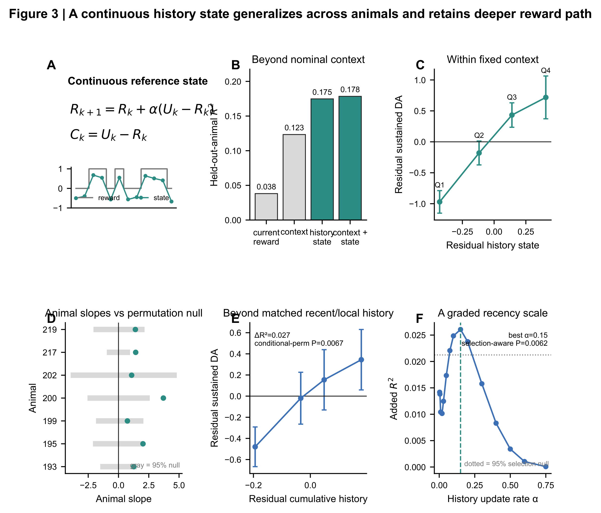
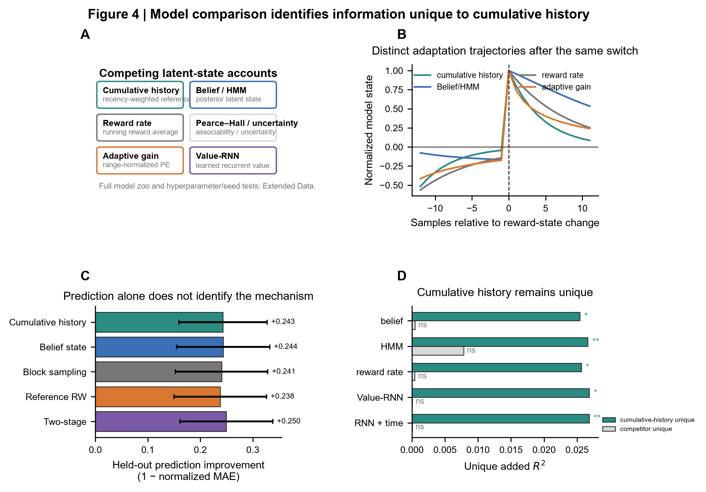
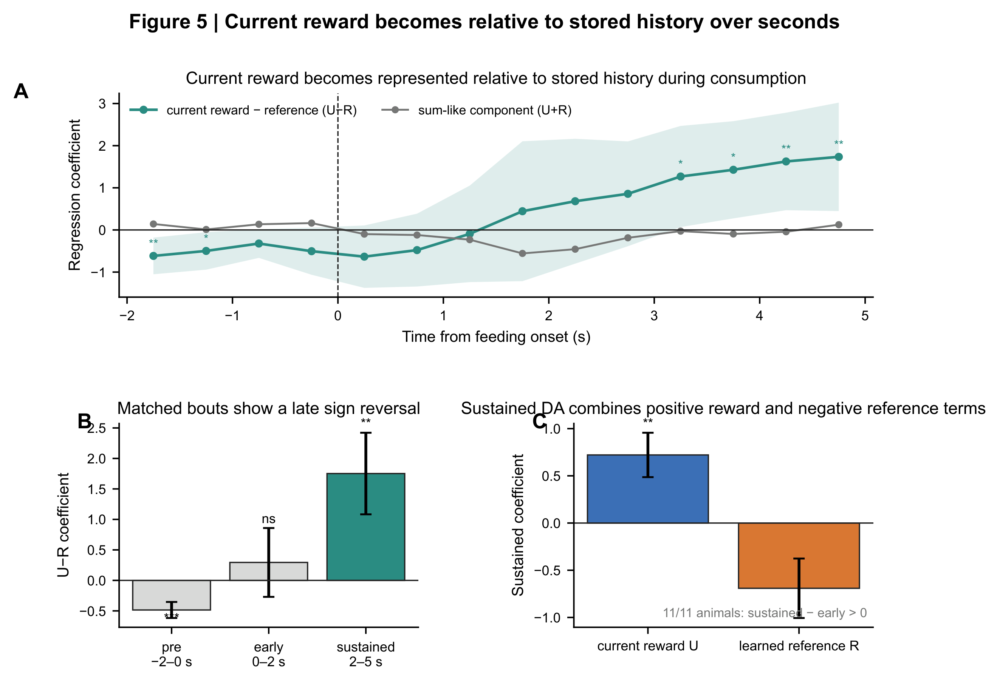
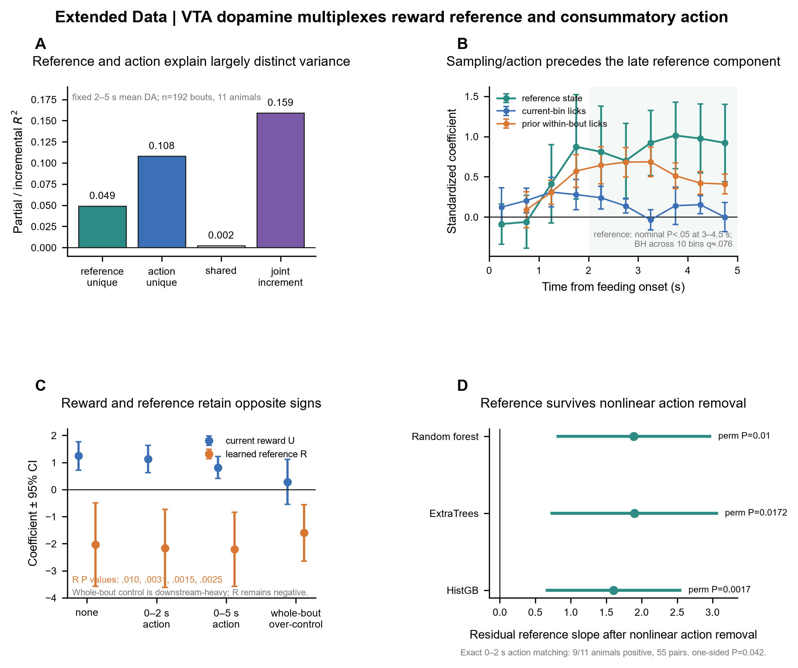

Matched current rewards retain a history effect.
The aligned history effect was positive for both feeding persistence and sustained VTA dopamine in 9/9 mice (two-sided exact Wilcoxon signed-rank, P=.003906 for each endpoint).
Mice consumed alternating high- and low-value liquid food while dopamine was measured locally in the ventral tegmental area (VTA). The same current reward produced different sustained dopamine and feeding persistence after different recent reward histories. The history effect was updated by sampled consumption rather than passive time alone, was captured by a continuous learned reference, and became most evident during ongoing consumption. Importantly, sustained VTA dopamine was not a pure abstract-value signal: licking and reward sampling explained substantial concurrent variance, while a history-relative component remained after action controls. Dopamine manipulations bidirectionally changed feeding persistence, yet memory of prior stimulation could alter later dopamine without measurably altering later bout duration.
The aligned history effect was positive for both feeding persistence and sustained VTA dopamine in 9/9 mice (two-sided exact Wilcoxon signed-rank, P=.003906 for each endpoint).
The sustained-minus-early coefficient for the relative-value coordinate increased by +1.458 across 11 mice (animal-clustered regression interaction, P=9.02×10−8); all 11 animal-level slopes increased (two-sided exact Wilcoxon, P=.000977).
Consumption-period activation lowered the termination odds ratio (OR) to .690 (13 mice; animal-clustered discrete-time logistic hazard, P=3.29×10−10), whereas consumption-contingent Jaws optogenetic inhibition raised them (OR=1.341; 6 mice; animal-clustered discrete-time logistic hazard, P=.0289).
This box defines the experimental shorthand and the model variables used throughout the page. The distinction between the stored reference R and the fitted contrast coordinate C=U−R is essential.
| Term | Definition | How it is used here |
|---|---|---|
| 100E / 20E | E = Ensure. 100E is full-strength (100%) Ensure; 20E is Ensure diluted to 20% of the full-strength concentration. | They are the high- and low-reward liquid foods. “100” and “20” refer to Ensure concentration, not model value. |
| Reward blocks | In variable sessions, 100E and 20E alternated every 120 s. The starting parity differed across acquisition cohorts and is handled explicitly in reconstruction. | Bouts crossing a 120-s boundary were removed rather than artificially split. |
| Feeding bout | A bout is a run of licks separated from the next run by an inter-lick interval >5 s. Bout end is the last lick + ~0.12 s; bouts ≤0.2 s are excluded. | The primary sustained neural window (2–5 s after bout onset) requires bouts lasting at least 5 s. |
| GRAB-DA | G protein-coupled receptor (GPCR)-activation-based dopamine (GRAB-DA) sensor fiber photometry recorded locally in the VTA. | This is VTA dopamine-sensor fluorescence, not dopamine measured in a projection target such as nucleus accumbens and not a calcium signal from dopamine neurons. |
| H / L / S / N | H = 100E in a stable high-reward context; L = 20E in a stable low-reward context; S = 100E in the alternating session; N = 20E in the alternating session. | H vs S and L vs N hold the current food constant while changing recent reward history. |
| U | The current-reward term, coded 0 for 20E and 1 for 100E in the main models. | “Current utility” is shorthand; U is not an independently measured subjective-value latent variable. |
| R | The stored reward reference formed from prior sampled reward identities. | At each prior reward sample, R is updated toward the sampled reward by R ← R + α(U − R). |
| C = U − R | The current reward relative to its stored reference. | The legacy internal column name RWstate is C, not R. The public page therefore calls it the relative-value or contrast coordinate. |
| α | The per-sample update fraction in the recursive reference model. | The optimum in the alternating natural-reward task is broad around ~0.15–0.16; α=.20 was then held fixed for cross-task transfer because it remains near the optimum across datasets, not because .20 is a biological constant. |
| QE | Quinine-adulterated Ensure; the replication analysis used 100E with 3 mM quinine as a lower-quality sensory outcome. | A separate reward-quality paradigm used to test transfer of the history computation. |
| Stim13 | The 13-mouse VTA dopamine-stimulation cohort. | The same cohort supports both the acute current-stimulation analysis and the later stimulation-history analysis. |
| Jaws / JAWS | Jaws is the red-shifted inhibitory opsin used for optical inhibition of VTA dopamine neurons; some source files use the label JAWS. | Used to test whether consumption-period dopamine is causally required for normal persistence. |
| FullHistory | A richer comparator that retains substantially more of the prior reward sequence than the single-state model. | Used in supplementary model comparisons to ask whether a one-dimensional contrast misses important history information. |
| OOF | Out-of-fold prediction, here usually leave-one-animal-out. | Used for prediction checks; inferential within-animal tests are reported separately. |
| cSNC / GT | cSNC = consummatory successive negative contrast; GT = gustatory thalamus. | Classical contrast literature is discussed as a circuit-level comparison in the folded supplement, not as an assumed identity with the present mechanism. |
A negative coefficient on R means that, after accounting for current reward U, a higher stored reference predicts less sustained dopamine.
By contrast, the coefficient that becomes positive at ~3 s is the coefficient on C=U−R.
The previously reported RWstate coefficient is likewise a coefficient on C, not on R: βC=+2.283 in 192 eligible bouts from 11 mice (animal-clustered ordinary least-squares regression, P=.00171).
At fixed U, a positive C effect and a negative R effect express the same opponent geometry.
The standardized two-predictor model gives U=+.762 and R=−.721 in 192 eligible bouts from 11 mice (animal-clustered ordinary least-squares regression; P=.00216 and .0282) after z-scoring U and R separately. The later action-adjusted model gives U=+.815 and R=−2.211 in the same 11-mouse dataset (animal-clustered ordinary least-squares regression; P=8.6×10−5 and .00153) on their raw scales after adding early and concurrent licking terms. Their magnitudes should not be compared directly. The model does not constrain the two coefficients to be equal and opposite; equality is imposed only when a single C=U−R predictor is fitted.
Before the first lick, the model can label the upcoming block reward but the animal has not yet sampled that reward. The pre-bout C coefficient is negative (β=−.485; 11 mice; animal-clustered regression, P=.000235), so baseline VTA dopamine is organized oppositely to the later consumption-period contrast. We therefore interpret the pre-bout signal as anticipatory/contextual organization of reward history, not as a negative prediction error or evidence that the current food has negative utility.
| Experiment | Mice | Animal IDs | Overlap that matters for interpretation |
|---|---|---|---|
| Matched-current H/L/S/N comparison (Fig. 1) | 9 | 002, 004, 193, 195, 199, 200, 202, 217, 219 | Seven also belong to the 11-mouse alternating-reward cohort; 002 also appears in the QE/physiology cohort. |
| Variable 120-s 100E/20E sessions (Figs. 2–5) | 11 | 193, 195, 199, 200, 202, 217, 219, 236, 239, 240, 243 | The first five form the DT subgroup later reused in the 5-mouse 20E stimulation experiment. |
| QE, quinine, hunger and lithium chloride (LiCl) family | 7 | 001, 002, 003, 006, 007, 018, 019 | These analyses use the same seven-animal family; only 002 overlaps the Fig. 1 cohort. |
| Stim13 acute and stimulation-history analyses | 13 | 017, 023, 029, 030, 034, 058, 066, 070, 071, 128, 130, 131, 133 | No overlap with the 11-mouse alternating-reward cohort. |
| 20E stimulation replication | 5 | 193, 195, 199, 200, 202 | These are the same five mice already present in the 11-mouse alternating-reward cohort, tested in separate stimulation sessions. |
| Contingent and noncontingent JAWS inhibition | 6 | 098, 103, 109, 110, 111, 112 | A separate inhibition cohort. |
| Semaglutide / phosphate-buffered saline (PBS) repeated-treatment cohort | 7 | 005, 029, 034, 058, 066, 070, 071 | Six of seven also appear in Stim13; semaglutide is a separate pharmacological experiment. |
Fig. 1 is intentionally model-free. H and S contain the same 100E reward; L and N contain the same 20E reward. What differs within each pair is the recent reward environment.

For current 100E, the alternating-session condition follows lower-reward experience and is compared with stable 100E. For current 20E, stable 20E is compared with 20E reached from the higher-reward alternating context. Aligning those two comparisons asks whether the same physical outcome is evaluated relative to its recent range.
The history-aligned effect is not a simple baseline offset carried unchanged into the bout. Pre-consumption dopamine and sustained 2–5 s dopamine have different sign structure, motivating the time-resolved analysis in Fig. 5.
Alternating 120-s blocks make elapsed time and reward sampling diverge on the first bout after a switch. This allows a direct test of a passive clock against experience-gated updating.

The recursive model uses prior sampled reward identities to build R and then evaluates the current reward as C=U−R. Because current U is already included in the baseline, adding C is equivalent to asking whether stored history R contributes beyond the current reward.


Belief-state, average-reward, uncertainty/adaptive-gain and recurrent history models can each capture parts of the dynamics. The folded supplement shows where they help and where cumulative sampled history remains informative.
The broad-window analysis shows a strong early-to-sustained transition. Licking controls are placed here because they are part of the biological interpretation of the within-bout signal, not a separate post hoc defense.


As a sensitivity analysis, flexible 0–2 s plus 2–5 s licking controls leave a unique contribution of ΔR²=.04895 for C in 11 mice (conditional permutation, P=.0449). This borderline test is supportive rather than the primary evidence for the history effect.
Prior within-bout sampling becomes reliable earlier than the late C coefficient. Across ten exploratory 0.5-s bins in 11 mice, the late C effect reaches Benjamini–Hochberg (BH) q≈.076 after animal-clustered regressions; this is treated as exploratory timing evidence rather than a separate corrected discovery.
A separate seven-mouse reward-quality experiment used quinine-adulterated Ensure (QE) to ask whether a reward-history coordinate frozen from the Natural task carries information into a different sensory-value manipulation.

The same broad recency family can therefore transfer without implying that each task has the same optimal α, the same dopamine latency, or the same behavioral output gain.
The causal manipulation and the history analysis answer different questions. Current stimulation tests the immediate contribution of dopamine to persistence; stimulation history tests whether previously experienced dopamine-linked reward samples leave a reference that affects later bouts.

When VTA dopamine neurons are stimulated during ongoing consumption, animals are less likely to terminate that bout. Contingent inhibition shifts persistence in the opposite direction.
In Stim13, past ON/OFF reward sampling retained unique information about later dopamine after current stimulation condition, local adaptation and future-history controls (ΔR²=.002524; 13 mice; conditional permutation, P=5×10−5). The corresponding past-history effect on later bout duration was not detected in the same cohort (animal-clustered regression, P=.742).
The strongest unresolved questions concern the microscopic update variable, the cellular locus of the stored reference, and how a neural history signal is converted into behavior.
Prior lick count and prior feeding time are highly correlated in the current task. An experiment that independently varies delay, number of samples and consumed amount is needed to distinguish lick-by-lick updating from integrated exposure.
Single-cell recording or imaging during reward switches could separate cells encoding current reward, stored reference, consummatory action and relative value.
Circuit perturbations upstream of VTA and in classical contrast-related regions should test whether reference storage, comparison and persistence are anatomically separable.
Hold reward identity fixed while independently manipulating unsampled delay, sample count and sampled volume. The current model predicts little reference movement during unsampled delay and graded movement with experienced reward.
Hunger, satiety or GLP-1 manipulation can be crossed with the same alternating reward schedule. The resulting interaction would distinguish a change in current reward utility from a change in reference formation or downstream expression.
These sections are folded by default so that the main page reads as a biological argument rather than a model inventory.
| Question | Result | Interpretation |
|---|---|---|
| Does baseline subtraction create the late effect? | Raw non-pre-subtracted signal preserves a positive sustained contrast while the early contrast remains absent. | The temporal transition is not a subtraction artifact. |
| Does exact early-action matching remove the history effect? | High- versus low-C bouts matched on exact 0–2 s lick count remain directionally separated across animals. | Early motor output is not a sufficient explanation. |
| Does a nonlinear nuisance function remove C? | Random Forest, ExtraTrees and histogram gradient boosting all leave a positive residual C association. | The action-control result is not tied to one polynomial specification. |
| Does one low-capacity recurrent model replace the history coordinate? | A nominal low-dimensional recurrent exception fails family-wise correction and seed-confirmation. | Recurrent flexibility alone does not provide a stable replacement. |
| Is the effect identical across acquisition cohorts? | Direction is broadly positive, but reduced leave-one-cohort-out subsets lose power. | Do not infer a cohort-specific or genotype-specific mechanism from current data. |
| Model family | Biological idea | What it explains | What remains |
|---|---|---|---|
| Belief state / hidden Markov model (HMM) | Inference about a latent reward context | Switch-related state uncertainty and context inference | Cumulative sampled-history information remains after the inferred state is included. |
| Average reward rate | Recent opportunity cost or tonic reward environment | Slow reward-rate adaptation | Does not absorb the same cumulative path information. |
| Pearce–Hall / adaptive gain | Uncertainty-dependent learning or response gain | Changing sensitivity around surprising outcomes | Does not by itself reproduce the stored-history coordinate. |
| Value recurrent neural network (Value-RNN) | Learned nonlinear recurrent memory | Flexible compression of reward sequences | Stable recurrent improvements beyond the simpler history coordinate are not established. |
| Distributional value | Reward-distribution width or quantiles | Population-level distribution coding | Bulk photometry does not show added spread information beyond the central history state. |
| FullHistory | A richer representation of the full prior reward sequence | Tests whether a one-dimensional state discards important path information | Useful as a strong comparator; its complexity does not provide a unique biological mechanism. |
OOF (out-of-fold) prediction is reported separately from inferential tests because a model can predict well without identifying the biological variable that carries unique information.
| Manipulation | Cohort | Representative effect | Role in this study |
|---|---|---|---|
| Hunger / food restriction | 7-mouse QE/physiology family | Bout duration increased by 10.62 s; 6/7 mice increased (paired exact Wilcoxon, P=.03125). | Shows that physiological state can transform the value of the same 20E food. |
| LiCl devaluation / illness | Same 7-mouse family | Bout duration fell by a mean 7.68 s; 7/7 mice decreased (paired exact Wilcoxon, P=.015625). | Shows a negative internal-state/value transformation distinct from reward-history updating. |
| Semaglutide | 7 mice; 6 overlap Stim13 | Day-1 dopamine AUC was lower by 2.22 units versus PBS; 6/7 mice were lower (paired exact Wilcoxon, P=.03125). | Links the framework to a slow glucagon-like peptide-1 receptor (GLP-1R)-dependent satiety state and earlier work on hedonic eating. |
Classical consummatory successive negative contrast (cSNC) asks how intake changes after an expected high-value solution is replaced by a lower-value one. Lesion work implicates the gustatory thalamus (GT), insular cortex and amygdala-related circuitry in aspects of contrast behavior. Those results motivate circuit hypotheses for reference storage, comparison and affective response, but the present alternating-block task and VTA dopamine signal should not be collapsed into cSNC as if they were the same phenomenon.
A decisive circuit experiment would combine the present reward-history paradigm with temporally targeted perturbation of candidate sensory/limbic nodes while measuring both VTA dopamine and persistence.